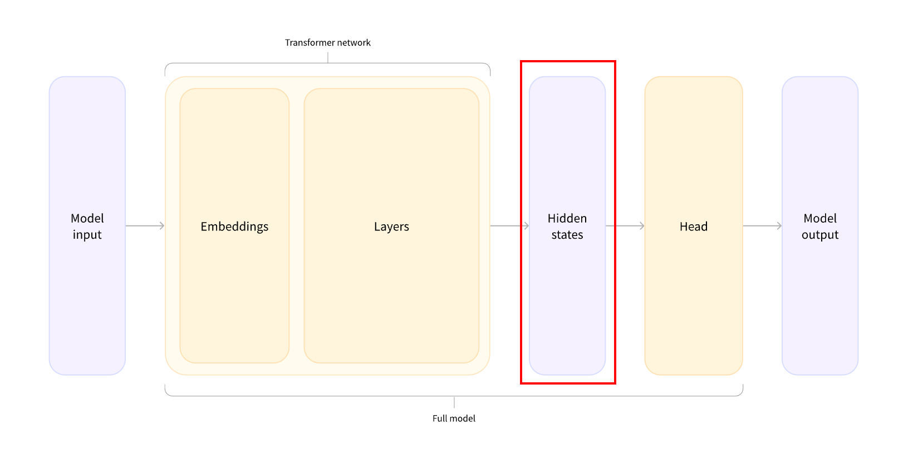

2026 02 01 09:46:39 behind the pipeline
Going through the model
the different tasks could have been performed with the same architecture, but each of these tasks will have a different head associated with it.

Full example
from transformers import AutoTokenizer
from transformers import AutoModel
from transformers import AutoModelForSequenceClassification
# 1. raw text to tokens
checkpoint = "distilbert-base-uncased-finetuned-sst-2-english"
tokenizer = AutoTokenizer.from_pretrained(checkpoint)
raw_inputs = [
"I've been waiting for a HuggingFace course my whole life.",
"I hate this so much!",
]
inputs = tokenizer(raw_inputs, padding=True, truncation=True, return_tensors="pt")
print(inputs)
# 2. compute by the model
checkpoint = "distilbert-base-uncased-finetuned-sst-2-english"
model = AutoModel.from_pretrained(checkpoint)
outputs = model(**inputs)
print(outputs.last_hidden_state.shape)
# 3. the classifier head
checkpoint = "distilbert-base-uncased-finetuned-sst-2-english"
model = AutoModelForSequenceClassification.from_pretrained(checkpoint)
outputs = model(**inputs)
print(outputs.logits.shape)
predictions = torch.nn.functional.softmax(outputs.logits, dim=-1)
print(predictions)
Preprocessing with a tokenizer
output of the tokenizer
{
'input_ids': tensor([
[ 101, 1045, 1005, 2310, 2042, 3403, 2005, 1037, 17662, 12172, 2607, 2026, 2878, 2166, 1012, 102],
[ 101, 1045, 5223, 2023, 2061, 2172, 999, 102, 0, 0, 0, 0, 0, 0, 0, 0]
]),
'attention_mask': tensor([
[1, 1, 1, 1, 1, 1, 1, 1, 1, 1, 1, 1, 1, 1, 1, 1],
[1, 1, 1, 1, 1, 1, 1, 1, 0, 0, 0, 0, 0, 0, 0, 0]
])
}
model and its hidden states
vector output by the Transformer module, three dimensions:
- Batch size: The number of sequences processed at a time (2 in our example).
- Sequence length: The length of the numerical representation of the sequence (16 in our example).
- Hidden size: The vector dimension of each model input. (can be very large)
output
It represents a 3D Tensor.
-
2(Batch Size): You called it "sentences," and that’s a great way to think of it. More technically, it’s the number of independent sequences being processed at the exact same time. This is how GPUs stay busy—by doing the math for both sequences in parallel. -
16(Sequence Length / \(L\)): You called it "words," but in LLM-land, we call them tokens. Since tokenizers sometimes split one word into two pieces (likeberryintober+ry), this dimension represents the total number of tokens in each sequence. -
768(Hidden Dimension / \(d_{model}\)): You are exactly right—this is the vector size. Every single token is "embedded" into a 768-dimensional space. This is the "Goldilocks" size used by the famous BERT-base model.
Model heads: Making sense out of numbers
The model heads take the high-dimensional vector of hidden states as input and project them onto a different dimension. They are usually composed of one or a few linear layers:
output
print(outputs.logits.shape)
torch.Size([2, 2])
print(outputs.logits)
tensor([[-1.5607, 1.6123],
[ 4.1692, -3.3464]], grad_fn=<AddmmBackward>)
after the softmax
Python
import torch
input_tensor = torch.tensor([[-1.5607, 1.6123],
[4.1692, -3.3464]])
softmax_out = torch.softmax(input_tensor, dim=-1)
exp_tensor = torch.exp(input_tensor)
sum_exp = exp_tensor.sum(dim=-1, keepdim=True)
print(f"Input:\n{input_tensor}")
print(f"Exp:\n{exp_tensor}")
print(f"Sum Exp:\n{sum_exp}")
print(f"Softmax Output:\n{softmax_out}")
Code output
Input:
tensor([[-1.5607, 1.6123],
[ 4.1692, -3.3464]])
Exp:
tensor([[2.0999e-01, 5.0143e+00],
[6.4664e+01, 3.5211e-02]])
Sum Exp:
tensor([[ 5.2243],
[64.6989]])
Softmax Output:
tensor([[4.0195e-02, 9.5981e-01],
[9.9946e-01, 5.4423e-04]])
This transformation is the "Normalization" phase of the Attention mechanism. In an LLM, Softmax is used to turn raw "scores" (logits) into probabilities that sum up to 1 (or 100%).
softmax
For a vector of scores \(z\), the Softmax for each element \(i\) is calculated as:
Where:
- \(e\) is Euler's number (\(\approx 2.718\)).
- The numerator is the exponential of the specific score.
- The denominator is the sum of exponentials of all scores in that row.
Step-by-Step Calculation
Let's look at how your specific numbers were transformed row by row (using dim=-1).
Row 1: \([-1.5607, 1.6123]\)
- Calculate Exponentials (\(e^z\)):
- \(e^{-1.5607} \approx 0.20999\)
- \(e^{1.6123} \approx 5.0143\)
- Calculate the Sum:
- \(Sum = 0.20999 + 5.0143 = \mathbf{5.2243}\)
- Divide by Sum:
- \(0.20999 / 5.2243 = \mathbf{0.040195}\) (which is \(4.0195 \times 10^{-2}\))
- \(5.0143 / 5.2243 = \mathbf{0.95981}\)
- Result: \([0.0402, 0.9598]\) (Sums to 1.0)
Row 2: \([4.1692, -3.3464]\)
- Calculate Exponentials (\(e^z\)):
- \(e^{4.1692} \approx 64.664\)
- \(e^{-3.3464} \approx 0.0352\)
- Calculate the Sum:
- \(Sum = 64.664 + 0.0352 = \mathbf{64.6992}\)
- Divide by Sum:
- \(64.664 / 64.6992 = \mathbf{0.99946}\)
- \(0.0352 / 64.6992 = \mathbf{0.000544}\) (which is \(5.4418 \times 10^{-4}\))
- Result: \([0.9995, 0.0005]\) (Sums to 1.0)